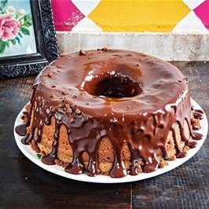

Receita de bolo
Bolo de chocolate
ingredientes
- 4 Ovos
- 2 colheres de sopa de manteiga
- 2 xícaras de chá açúcar
- 1 xícara de chá leite
- 4 colheres de sopa de chocolate 70% em pó
- 3 xícaras de chá de Farinha de trigo
- 2 colheres de sopa de fermento

Modo de preparo
- Em um liquidificador adicione os ovos, o chocolate em pó, a manteiga, a farinha de trigo, o açúcar e o leite, depois bata por 5 minutos.
- Adicione o fermento e misture com uma espátula delicadamente.
- Em uma forma untada, despeje a massa e asse em forno médio (180 ºC) preaquecido por cerca de 40 minutos. Não se esqueça de usar uma forma alta para essa receita: como leva duas colheres de fermento, ela cresce bastante! Outra solução pode ser colocar apenas uma colher de fermento e manter a sua receita em uma forma pequena.